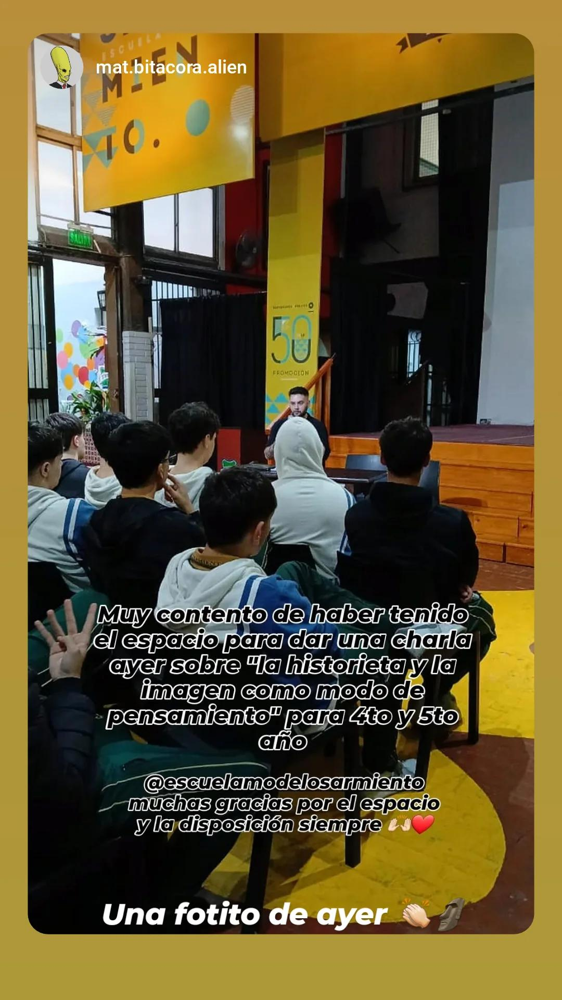

Acá les dejo avances y un poco de lo rescatado del proceso general de la creación de "El Guardián de la Gravedad", lo estaré actualizando, estén pendientes!
03 · Abril · 2026
Registro — 03/04/2026
Con mucha emoción y orgullo, puedo anunciar que el adelanto oficial de el tomo N°1 se encuentra exhibido en la galería artística "La Porteña" en Talcahuano 467 desde el 3 hasta el 18 de Abril, la galería se encuentra abierta de 10 a 21 hrs. los días martes a sábados. Es un orgullo compartir espacio con mis compañeros del final de la carrera para darle un cierre a todo éste camino. Queda poquito parala salida oficial de "El Guardián de la Gravedad"!! Estén atentos para más novedades y pasen por la galería!! Nos estamos viendo, pronto!
25 · Diciembre · 2025
Registro — 25/12/2025

Felices Fiestas! Fue un hermoso año, empiecen el 2026 con todo, yo sigo trabajando en terminar el proyecto! Ya no queda nada, nos vemos dentro de poco ;)
12 · Diciembre · 2025
Registro — 12/12/2025
Acá una imagen del montaje previo a ser definitivo. A día de hoy hay algunos pequeños cambios que quiero realizarle para próximamente presentarlo para el cierre definitivo.
25 · Noviembre · 2025
Registro — 25/11/2025
Fue el último día de cursada, mi último día en la facultad y encaminado a preparar y presentar la tesis. Fue un día muy especial y hermosa forma de cerrar el año universitario.
28 · Octubre · 2025
Registro — 28/10/2025

Tuve la suerte de dar una charla informativa de "La Historieta y el Lenguaje Visual de las Imágenes" en la Escuela Modelo Sarmiento, donde estuve toda mi niñez y donde me decidí ser artista; fue todo un orgullo y un primer logro para mí.
05 · Octubre · 2025
Registro — 05/10/2025
Por fin! Terminé todas las páginas que integran a "El Guardián de la Gravedad" Tomo n°1, siendo un total de 104 páginas. Cada vez más cerquita de terminar.
19 · Septiembre · 2025
Registro — 19/09/2025
Ya para estas fechas estaba cursando Nivel III de Proyectual y el último año de mi carrera universitaria. En el video se puede ver como estoy avanzando con el capítulo 2 y último del Tomo N°1.
09 · Septiembre · 2025
Registro — 09/09/2025
Aquí realicé el primer montaje con una impresión mucho más avanzada de la historieta, con prólogo y capítulo 1 ya incluídos y una instalación de la obra que acompaña a la ambientación de su presentación.
10 · Junio · 2025
Registro — 10/06/2025
Ya habiendo pasado bastante tiempo, para estas fechas estaba realizando la línea definitiva del capítulo 1. Por suerte me pude acomodar mucho mejor al programa digital que utilizo.
24 · Octubre · 2024
Registro — 24/10/2024
Revisité las páginas iniciales del capítulo 1 para hacer unas leves correcciones de ideas y dibujo.
04 · Octubre · 2024
Registro — 04/10/2024
Ya para estas fechas estaba realizando los bocetos del "Capítulo 1", cursando nivel II de Proyectual, un año decisivo para mí, que terminó de definir lo que es TODO el proyecto.
11 · Septiembre · 2024
Registro — 11/09/2024
A éste personaje le tengo mucho cariño; lo creé con ideas de Constanza Martínez Rolón, que supervisaba lo que iba haciendo. Le gustaba mucho el personaje. Es una persona que amo, admiro mucho y una increíble artista. Es muy especial para mí.
12 · Junio · 2024
Registro — 12/06/2024
Primer aparición de personajes secundarios próximos a aparecer en lo que sería el "Capítulo 2"; acá realizo una prueba de color y luz.
17 · Febrero · 2024
Registro — 17/02/2024
A pocos días de la primer entrega final de Proyectual, pude tener mi primer versión impresa de la historieta. Al principio el proyecto tenía un enfoque en "diferentes estilos visuales" según qué pasaba en la historia, pero eso terminó siendo completamente descartado.
30 · Enero · 2024
Registro — 30/01/2024
Ya entrando en 2024, pasé todos los bocetos a digital y empecé a trabajar la línea con Clip Studio Paint; mi idea era definir todo en digital para poder imprimirlo posteriormente.
29 · Septiembre · 2023
Registro — 29/09/2023
Tomé como referencia una ilustración que había hecho en base a un dibujo de cuando era chico y lo agregué como personaje relevante en la historia, mientras, seguía avanzando con más páginas y bocetos.
21 · Septiembre · 2023
Registro — 21/09/2023
Avance de las páginas del Prólogo. En ese momento todavía escribía el texto en los propios bocetos.
24 · Agosto · 2023
Registro — 24/08/2023
Para la fecha del video, ya estaba cursando la segunda mitad de Taller proyectual I de Dibujo y con eso, el comienzo de los bocetos de lo que sería el "Prólogo" de "El Guardián de la Gravedad".
14 · Junio · 2023
Registro — 14/06/2023
Primeras viñetas de prueba y experimentación, hecho en tradicional.
27 · Mayo · 2023
Registro — 27/05/2023
Después de meses de la primer referencia, comencé Taller Proyectual de Dibujo en la facultad. Éste dibujo es del primer dibujo para definir el diseño de "Gresh".
16 · Agosto · 2022
Registro — 16/08/2022
Registro Inicial, tomo este lienzo que pinté de BoB como la aparición definitiva de las primeras inquietudes e ideas sobre el proyecto, concibiendo así el primer personaje.